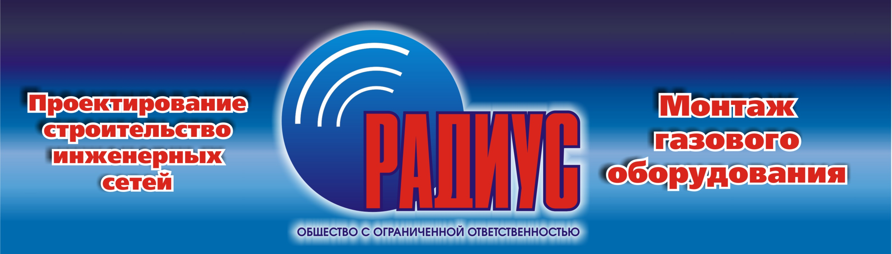

Основные принципы
В строительной продукции и услугах мы закладываем качество такого уровня, которое обеспечивает к нам уважение и преданность потребителей.
Заказчик - важнейшая фигура в нашем деле, наш партнер. Создавая продукцию, всегда помним о потребителе. Главная задача - удовлетворить его нужды и расширить рынок.
От эффективности работы каждого сотрудника зависит успех организации. Мы поддерживаем друг друга и вместе радуемся победам.
Мы приветствуем взаимодействие сотрудников с руководителями любого уровня, обмен идеями, свободное обсуждение проблем, направленных на повышение эффективности и качества жизни.
Юридическая ответственность
Работаем официально, несём полную ответственность по договору. Являемся подрядчиками газораспределительных организаций Томска.
Лицензии и допуски
СРО, Промбезопасность, НАКС. Все разрешения для проектирования, строительства и контроля газопроводов.
Выезд специалиста
Бесплатный выезд инженера на объект для консультации и оценки. Оперативно решаем вопросы на месте.
Сжатые сроки
Газификация и подключение в кратчайшие сроки. Опыт решения «проблемных» объектов.
Полное сопровождение
От подачи заявления до пуска газа. Мы лично сдаём работу газораспределительной организации.
Собственное оснащение
Установка DITCH WITCH JT 20x20 MACHI, современная лаборатория НК.
- Проектирование внутренних и наружных инженерных сетей
- Выполнение функций генерального проектировщика
- Расчет потребности в тепле и топливе
- Предоставление услуг проектного инжиниринга
- Осуществление авторского надзора
- Оформление разрешений на строительство
- Акт выбора трассы, постановления администрации
- Градостроительный план, выделение участков
- Получение ТУ, утверждение проекта, договор на поставку газа
- Газопроводы: внутригородские и межпоселковые
- Наружные/внутренние сети водоснабжения, канализации, теплоснабжения
- Бестраншейная прокладка (ГНБ)
- Газоснабжение котельных и АГЗС
- Пуско-наладочные и режимно-наладочные работы
- Прокладка под полотном автодорог, ж/д и трамвайными путями
- Переход под коридором коммуникаций на любой глубине
- Функции генподрядчика, гензаказчика
- Монтаж газового оборудования (котлы, счетчики, сигнализаторы)
Лаборатория неразрушающего контроля
Аттестованная лаборатория. Современное оборудование, выявление дефектов.
- Контроль сварных соединений, оборудования, материалов (полиэтилен, сталь).
- Методы: ультразвуковой, рентгенографический, визуальный и измерительный.
Документация
Получение ТУ, проект, утверждение в контролирующих инстанциях, договор на абонентское обслуживание и поставку газа.
Материалы
Закупка сертифицированных материалов и комплектующих (трубы, счетчики, краны, сигнализаторы, котлы).
Монтаж
Прокладка газопровода (наземный/подземный метод ГНБ), установка оборудования, сварочно-монтажные работы.
Пуск газа
Контрольный пуск газа, пуско-наладочные работы, сдача объекта газораспределительной организации.

ГНБ DITCH WITCH JT 920
Установка горизонтально-направленного бурения. Бестраншейная прокладка коммуникаций без нарушения благоустройства.
Свяжитесь с нами
Отправьте заявку - наш менеджер перезвонит вам в ближайшее время. Бесплатный выезд специалиста на объект.
8 (3822) 28-23-06, 30-70-70
radiustomsk@mail.ru
Мы на карте:
Адрес: г. Томск, ул. Смирнова, 9/1
(вход с ул. Смирнова, ориентир - остановка "Мировой суд")